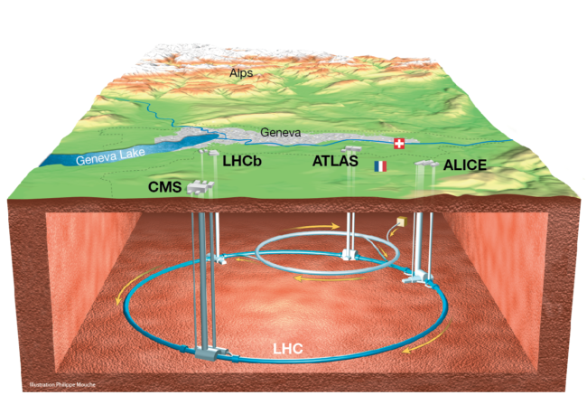
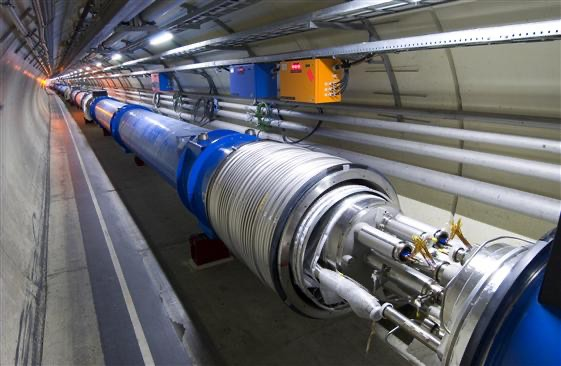

Introduction to Particle Physics - theory background#
Particle physics is the field of physics where structures of matter and radiation and the interactions between them are studied. In experimental particle physics, research is performed by accelerating particles and colliding them either with other particles or with solid targets. This is done with particle accelerators and the collisions are examined with particle detectors.
The world's largest particle accelerator, the Large Hadron Collider (LHC), is located at CERN, the European Organization for Nuclear Research. The LHC is a 27 kilometers long circle-shaped synchrotron accelerator. The LHC is located in a tunnel 100 meters underground on the border of France and Switzerland (image 1).
In 2012 the ATLAS and CMS experiments at CERN made an announcement that they had observed a new particle with a mass equal to the predicted mass of the Higgs boson. The Higgs boson and the Higgs field related to it explain the origin of the mass of particles. In 2013 Peter Higgs and François Englert, who predicted the Higgs boson theoretically, were awarded the Nobel prize in physics.

Accelerating Particles#
The LHC mainly accelerates protons. The proton source of the LHC is a bottle of hydrogen. Protons are produced by stripping the electrons away from the hydrogen atoms with the help of an electric field.
The process of accelerating the protons starts before the LHC. Before the protons arrive in the LHC, they are accelerated with electric fields and directed with magnetic fields in smaller accelerators (Linac 2, Proton Synchrotron Booster, Proton Synchrotron, and Super Proton Synchrotron). After these, the protons have an energy of 450 GeV. The protons are injected into the LHC in two different beam pipes; each beam contains 2,808 proton bunches located about 7.5 meters from each other. Each of these bunches includes 1.2 \times 10^{11} protons.
The two beams circulate in opposite directions in two different vacuum tubes. Image 2 shows a part of the LHC accelerator opened with the two vacuum tubes visible inside. Each of the proton beams will reach the energy of about 7 TeV (7,000 GeV) in the LHC.

Particle collisions are created by crossing these two beams that are heading in opposite directions. Because the bunches are traveling so fast, there will be about 40 million bunch crossings per second in the LHC. When two proton bunches cross, not all of the protons collide with each other. Only about 40 protons per bunch will collide and so create about 20 collisions. That means there will be 800 million proton collisions every second in the LHC. That's a lot of action!
The maximum energy of these collisions is 14 TeV. However, in most cases, the collision energy is smaller than that because when protons collide, it is really their constituents—the quarks and gluons—which collide with each other. So not all of the energy of the protons is transmitted to the collision.
When the protons collide, the energy of the collision can be transformed into mass E=mc^2, and new particles are produced in the collisions. These new particles are ejected from the collision area, a bit like a small explosion. By examining and measuring the particles created in collisions, researchers try to understand better the known particles which make up our universe and search for new particles which could explain puzzles such as dark matter.
The acceleration and collision processes are summarized well in the short video below. Watch the video from the start until 1:15 to get a picture of these processes.
Examining particle collisions - detectors#
In particle physics, detectors are the instruments that allow scientists to observe and study the behavior of subatomic particles produced in high-energy collisions. These detectors are specialized devices, capable of measuring various properties of particles such as their energy, momentum, and charge. By capturing and analyzing this data, researchers can infer the presence of particles that are otherwise invisible, contributing to our understanding of the fundamental building blocks of matter and the forces governing their interactions.
Tracker#
The innermost part is the silicon tracker. The silicon tracker makes it possible to reconstruct trajectories of charged particles. Charged particles interact electromagnetically with the tracker and create an electric pulse. An intense magnetic field bends the trajectories of the charged particles. With the curvature of the trajectories shown by the pulses created in the tracker, it is possible to calculate the momenta of the charged particles.
Calorimeter#
Particle energies can be measured with help of the calorimeters. Electrons and photons will be stopped by the Electromagnetic Calorimeter (ECAL). Hadrons, for example protons or neutrons, will pass through the ECAL but will be stopped in the Hadron Calorimeter (HCAL). The ATLAS calorimeters are made up of two subsystems.
The Liquid Argon (LAr) Calorimeter surrounds the ATLAS Inner Detector and measures the energy of electrons, photons and hadrons. This system is made of layers of metal which absorb high energy particles, turning them into a 'shower' of lower energy particle which ionised layers of liquid argon in-between, creating an electrical signal. To keep the argon in liquid form, the LAr calorimeter is kept at -184°C.
The second ATLAS calorimeter is the Tile calorimeter, which surrounds the LAr and measures the energy of hadronical particles only, which may not have deposited all of their energy in the LAr. This is made of layers of steel, which generates showers of particles from incoming particles, and scintillating plastic tiles, which convert the showering particles to photons of a proportional energy, and which we can measure.
Muon spectrometer#
Only muons and very weakly interacting particles like neutrinos will pass through both the ECAL and HCAL without being stopped. Energies and momenta of muons can be determined with the muon chambers. The detection of the momentum is based on electrical pulses that muons create in the different sections of the muon chambers. Energies of muons can't be measured directly, but the energies will be determined by calculating them from the other measured quantities.
Missing energy#
Neutrinos can't be detected directly in the detector (they only interact very weakly and pass right through the detector), but the existence of them can be derived with the help of missing energy. It is possible that the total energy of the particles detected in a collision is smaller than the energy before the collision. Yet, we know that energy must be conserved. This situation indicates that something was undetected in the collision, this "missing energy" is assumed to be due to neutrinos created in the collision.
Congratulations! Now you know how a particle accelerator works, and how particle physicists use detectors to get a snapshot of the collisions! To get a first taste of the programming tools used to study the results of particle collisions, move on to Introduction to Coding in Python.
Before you continue to the next notebook, please familarise yourself with how particle accelerators work by watching this RAL video by Dr Tom Williams.